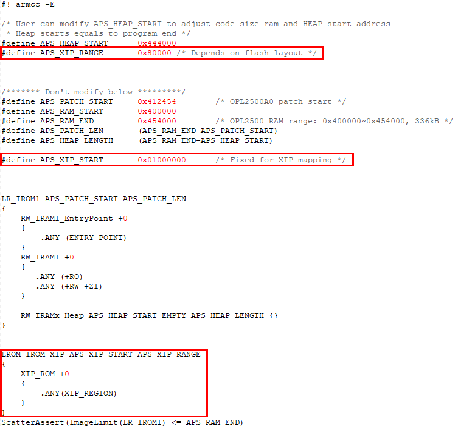
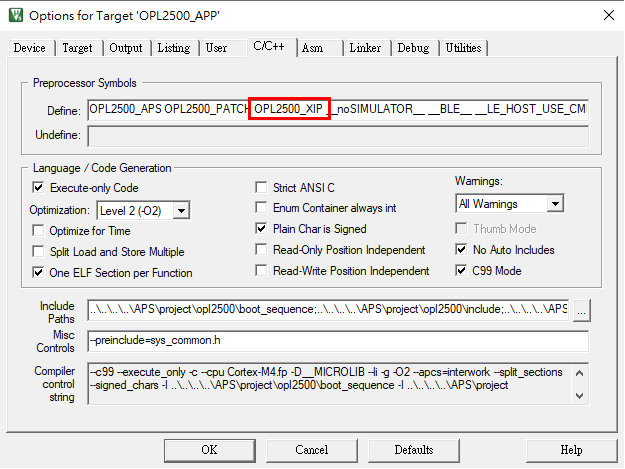
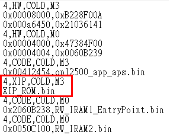
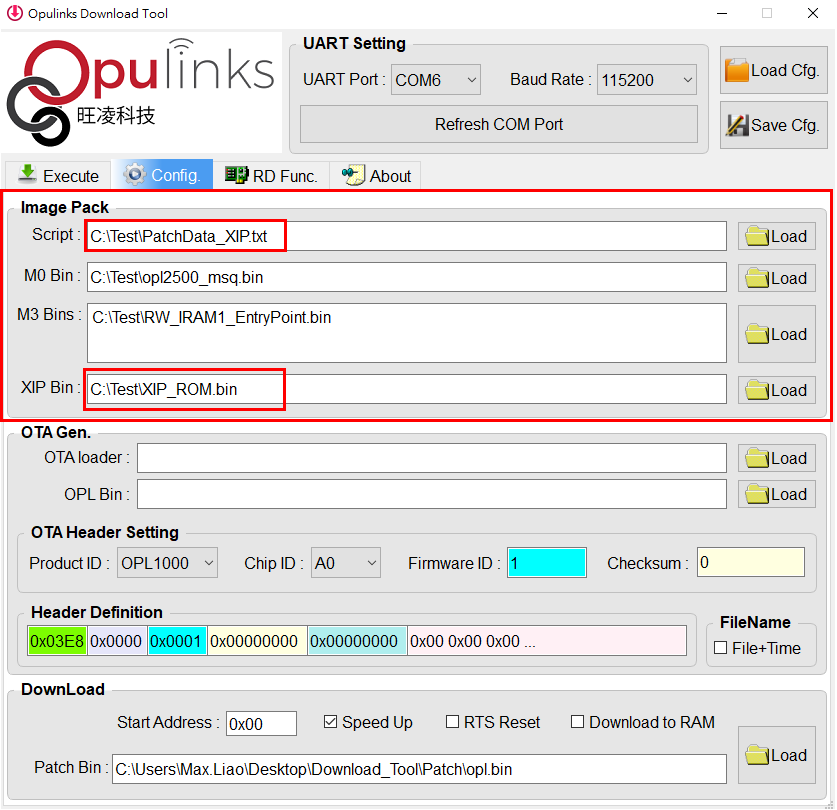

XIP (Execute In Place)
XIP is a method of executing programs directly from long-term storage rather than copying into RAM. It's an exetension of using shared memory to reduce the total amount of memory required. It's general effect is that the program text consumes no writable memory, saving it for dynamic data, and that all instance of the program are run from a single copy.
In the following guidience which base on <SDK base>/APS_PATCH/examples/get_started/XIP example project located in sdk in QuickDev Framework.
Warning
XIP function ONLY SUPPORTED ON OPL2500. If you can't find the XIP example, please make sure the sdk source was download from https://github.com/Opulinks-Tech/OPL2500A0-SDK.
Scatter File Setting
In XIP example has a scatter file name opl2500_app_aps.sct, this file declare some definition and memory scatter for project.
The following diagram presents which defines and memory scatter are belongs to XIP.

Enable XIP function
Then we also need declare the global defined OPL2500_XIP for the project to enable XIP function.

Using XIP Tag
When the scatter file and the global define are all sets, then you can now using the attribute tags like following items in your program.
- XIP_TEXT - tag for TEXT
- XIP_RODATA - tag for Read-Only DATA
Please refer to main_patch.c file in XIP example for the demonstration to using XIP tags.
// #line.74
// Sec 4: declaration of global variable
XIP_RODATA const uint8_t g_u8RoData[DEMO_XIP_RODATA_LEN] = {
0x22, 0x7D, 0xD2, 0x08, 0xB4, 0xF5, 0x5D, 0x56, 0x8C, 0xDF, 0x88, 0x52, 0x26, 0xF3, 0xD6, 0x52,
0x75, 0x34, 0x5C, 0xBA, 0x46, 0x60, 0x22, 0xEA, 0x50, 0xE1, 0x2E, 0x72, 0x44, 0xD6, 0xFE, 0xF1,
0x0E, 0x5E, 0x0B, 0xD1, 0x37, 0xFA, 0xF9, 0x0D, 0x0C, 0xAE, 0x8D, 0xE5, 0xC7, 0x67, 0x3C, 0xBD,
0x97, 0x56, 0x71, 0xA8, 0xDD, 0xC7, 0x21, 0xC2, 0x5F, 0x1E, 0xAE, 0x7D, 0x2E, 0x05, 0x9B, 0x2F,
0xA7, 0x80, 0x44, 0x42, 0x24, 0x26, 0xC5, 0xC8, 0x86, 0xBA, 0x91, 0x26, 0xD4, 0xE3, 0xED, 0xAC,
0xD4, 0xBD, 0x24, 0xA6, 0x2C, 0x14, 0x55, 0x5F, 0x69, 0x47, 0x5E, 0x0C, 0x4E, 0xC5, 0x17, 0x65,
0xB2, 0xDA, 0x7A, 0x55, 0x28, 0x18, 0x81, 0x19, 0x09, 0x11, 0x0F, 0xE9, 0x93, 0x3E, 0xEA, 0x75,
0x35, 0x2A, 0x79, 0xC2, 0x86, 0xC2, 0x75, 0xD7, 0xBF, 0x1B, 0x36, 0xFF, 0x29, 0xE8, 0x4A, 0x13
};
// #line.313
XIP_TEXT static void Main_AppInit_patch(void)
{
osThreadDef_t tThreadDef;
osMessageQDef_t tMessageDef;
osPoolDef_t tMemPoolDef;
...
}
Building Program
Click Build or Rebuild to compile the program.
To understand how to activate the build, please refer to Build project section for more information.
When the compile finish, system will generated two output file which located at Output/Objects/opl2500_app_aps.bin folder.
- RW_IRAM1_EntryPoint.bin - original application code
- XIP_ROM.bin - code with XIP tags
The XIP_ROM.bin contents with TEXT and Read-Only DATA which been tags in program and will not copy to RAM during
Pack With Binary
According to Download firmware section mention, after generated the binary files, we should pack the binary file with M0 Bin base on Script file, and using the packed binary for the last binary file to download into the device.
And for XIP project, XIP_ROM.bin now also required to pack into the last binary file to download. To do that, we MUST using a Script file which plus XIP. The name of the Script file is PatchData_XIP.txt.

The screen-shot of Download Tool like following diagram.

Then packed and download the last binary and verify the works.
XIP in External Flash
TBC..